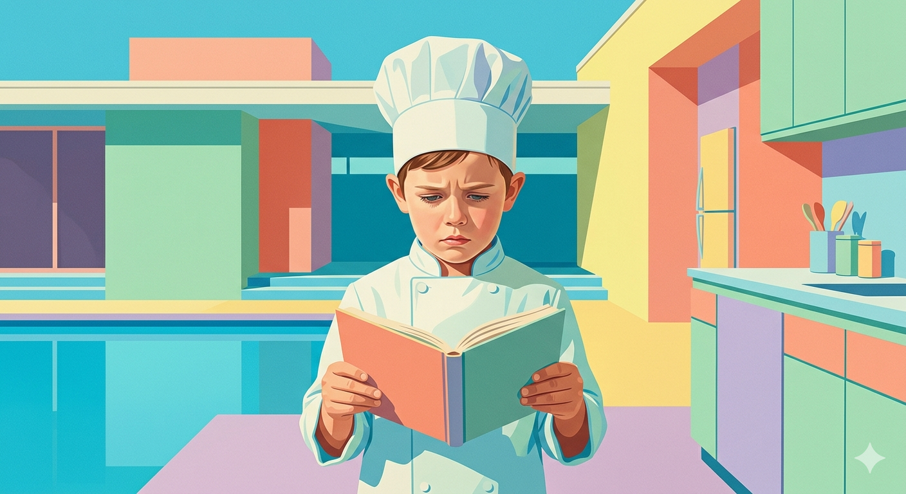

ENTENDER LA RECETA
RETO 1 — ENTENDEMOS LA RECETA

¡Comienza vuestro trabajo como equipo de cocina!
En este primer reto vais a descubrir que las matemáticas son fundamentales para cocinar correctamente. Las cantidades, las medidas y las unidades son muy importantes para que una receta salga bien.
Pero hay un problema…
La receta que vais a recibir utiliza diferentes unidades de medida y algunas de ellas pertenecen al sistema imperial, usado en países como Estados Unidos o Reino Unido. Vuestra misión será entender la receta y transformar todas las medidas correctamente.
1️⃣ Leer y analizar la receta
Debéis identificar:
- los ingredientes,
- las cantidades,
- y las unidades de medida que aparecen.
2️⃣ Convertir las unidades
Tendréis que transformar las cantidades:
del sistema métrico decimal al sistema imperial, o del sistema imperial al sistema métrico decimal.
Por ejemplo:
gramos ↔ onzas (oz)
mililitros ↔ cups
litros ↔ pintas
(Truco. Una taza cup es una medida de volumen, que a veces se utiliza para medir ingredientes como harina o azúcar. Al transformarlo a sistema métrico decimal deberás transformarlo a gramos. PERO OJO!!! Una taza de harina no pesa lo mismo que una taza de azúcar!!!!)
3️⃣ Organizar la información
Debéis presentar vuestro trabajo en una tabla clara y ordenada.
Divide el espacio de trabajo en tres columnas:
En la primera columna coloca la receta en versión original
En el espacio central elabora una tabla donde indiques la conversión de las cantidades
En la tercera columna escribe la receta en español
4️⃣ Explicar vuestro trabajo
Al final debéis escribir unas pocas líneas explicando:
qué conversiones os han parecido más difíciles, cómo las habéis realizado, y qué habéis aprendido.
¿Qué se valorará?
- Corrección de los cálculos
- Uso adecuado de las unidades
- Orden y presentación
- Explicaciones claras
- Trabajo en equipo
¿Qué debes entregar?
Una infografía o diapositiva (o varias) con:
- Título de la receta + imagen
- La receta original
- la tabla con los ingredientes expresados en Sistema Imperial y Sistema Métrico Decimal
- La receta en castellano
- Observaciones finales.
- Autores del trabajo y curso